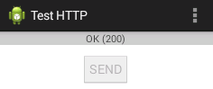

HTTP Clients
Reference: "Connecting to the Network" @ http://developer.android.com/training/basics/network-ops/connecting.html.
This section explains how to setup a networking program on Android. Do Example 1 below.
Classes java.net.HttpURLConnection and java.net.URL
A client program can use the java.net.HttpURLConnection class to establish a connection to an HTTP server. The HttpURLConnection support HTTPS, streaming uploads and downloads, configurable timeouts, IPv6, and connection pooling.
The steps are:
- Construct a
java.net.URLwith the intended URL (e.g., http://www.android.com).URL url = new URL("http://www.android.com"); - Obtain a new
java.net.HttpURLConnectionviaURL'sopenConnection()method.HttpURLConnection conn = (HttpURLConnection) url.openConnection();
- To upload a request body,
setDoOutput(true)to the connection, and write the the stream returned bygetOutputStream().conn.setDoOutput(true); OutputStream out = new BufferedOutputStream(conn.getOutputStream()); ......
- Read the response message (header and body). The response body can be read from the stream returned by
getInputStream().InputStream in = new BufferedInputStream(conn.getInputStream()); ......
- Disconnect.
conn.disconnect();
Read the API for "java.net.HttpURLConnection" and "java.net.URL".
For example,
URL url = new URL(......);
HttpURLConnection conn = (HttpURLConnection) url.openConnection();
try {
// Optionally write request body
conn.setDoOutput(true);
conn.setChunkedStreamingMode(0); // unknown stream length
OutputStream out = new BufferedOutputStream(conn.getOutputStream());
... write ...
// Get response code
int responseCode = conn.getResponseCode();
// Read response body
InputStream in = new BufferedInputStream(urlConnection.getInputStream());
... read ...
} finally {
conn.disconnect();
}
Permissions
To perform network operations in Android, your application manifest (AndroidManifest.xml) must include the following permissions:
<manifest ......>
<uses-permission android:name="android.permission.INTERNET" />
<uses-permission android:name="android.permission.ACCESS_NETWORK_STATE" />
......
</manifest>
Background Task via android.os.AsyncTask
In Android, the networking operations must be run on a separate thread from the main UI thread, because of its unpredictable delays. This can be carried out via:
- Extending an
android.os.AsyncTask<Params, Progress, Result>, whereParamsandResultare the types for thedoInBackground()method below. - Override method "
Result doInBackground(Params... params)" to carry out operations in the background. - Override method "
void onPostExecute(Result result)" to process theresultreturned bydoInBackground(). - To start the
AsyncTask, create an instance and invokeexecute(Params... params), which triggersdoInBackground()with the parameters andonPostExecute().
Read the API for "android.os.AsyncTask".
For example,
import android.os.AsyncTask ...... // Extend an AsyncTask to run the networking operations away from the main UI thread. private class NetworkingTask extends AsyncTask<String, Void, String> { // <Param, Progress, Result> // Run the networking operation in the background @Override protected String doInBackground(String... strUrls) { // networking operations ...... } // Process the result returned by doInBackground() @Override protected void onPostExecute(String result) { ...... } } ...... // To invoke the networking task with the given URL new NetworkingTask().execute(strUrl);
Example 1: Send an HTTP Request and Check the Response Code
Create an Android project with application name of "Test HTTP", domain "example.com", activity "MainActivity" and layout "activity_main".
The screen contains a Button and a TextView. Clicking the Button triggers an HTTP request (e.g., http://www.android.com) and displays the response code (e.g., 200 for "OK" and 404 for "file not found") displayed in the TextView.

AndroidManifest.xml
Add the permissions for network operations as follows:
<manifest ......>
<uses-permission android:name="android.permission.INTERNET" />
<application ......>
......
</manifest>
content_main.xml
<?xml version="1.0" encoding="utf-8"?>
<RelativeLayout xmlns:android="http://schemas.android.com/apk/res/android"
xmlns:app="http://schemas.android.com/apk/res-auto"
xmlns:tools="http://schemas.android.com/tools"
android:layout_width="match_parent"
android:layout_height="match_parent"
android:paddingBottom="@dimen/activity_vertical_margin"
android:paddingLeft="@dimen/activity_horizontal_margin"
android:paddingRight="@dimen/activity_horizontal_margin"
android:paddingTop="@dimen/activity_vertical_margin"
app:layout_behavior="@string/appbar_scrolling_view_behavior"
tools:context="com.example.testhttp.MainActivity"
tools:showIn="@layout/activity_main">
<TextView
android:id="@+id/txtResponseId"
android:layout_width="match_parent"
android:layout_height="wrap_content"
android:background="#cccccc"
android:gravity="center" />
<Button
android:id="@+id/btnSendId"
android:layout_width="wrap_content"
android:layout_height="wrap_content"
android:layout_alignParentTop="true"
android:layout_centerHorizontal="true"
android:layout_marginTop="32dp"
android:text="@string/btnSendLabel"
android:onClick="btnOnClickHandler" />
</RelativeLayout>
strings.xml
Add this entry:
<string name="btnSendLabel">SEND</string>
MainActivity.java
package ......; import .......; import java.io.IOException; import java.net.HttpURLConnection; import java.net.URL; import android.os.AsyncTask; import android.widget.Button; import android.widget.TextView; import android.view.View; import android.widget.Toast; public class MainActivity ...... { TextView txtResponse; Button btnSend; @Override protected void onCreate(Bundle savedInstanceState) { super.onCreate(savedInstanceState); setContentView(R.layout.activity_main); txtResponse = (TextView) findViewById(R.id.txtResponseId); btnSend = (Button) findViewById(R.id.btnSendId); ...... ...... } public void btnOnClickHandler(View v) { btnSend.setEnabled(false); // Disable the button new HttpTask().execute("http://www.android.com"); // Send HTTP request Toast.makeText(this, "Send", Toast.LENGTH_LONG).show(); // Toast a message } // Run the HTTP request in a background thread, separating from the main UI thread private class HttpTask extends AsyncTask<String, Void, String> { @Override protected String doInBackground(String... strURLs) { URL url = null; HttpURLConnection conn = null; try { url = new URL(strURLs[0]); conn = (HttpURLConnection) url.openConnection(); // Get the HTTP response code (e.g., 200 for "OK", 404 for "Not found") // and pass a string description in result to onPostExecute(String result) int responseCode = conn.getResponseCode(); if (responseCode == HttpURLConnection.HTTP_OK) { // 200 return "OK (" + responseCode + ")"; } else { return "Fail (" + responseCode + ")"; } } catch (IOException e) { return "Unable to retrieve web page. URL may be invalid."; } } // Displays the result of the AsyncTask. // The String result is passed from doInBackground(). @Override protected void onPostExecute(String result) { txtResponse.setText(result); // put it on TextView } } ...... ...... }
Try changing the URL in btnOnClickHandler() to "http://www.android.com/999.html" and "http://www.android.com999". Explain the result.
Notes:
- The localhost (127.0.0.1) refers to the Android emulator, not the host machine. Use the IP address of the server; or use a special IP 10.0.2.2 for the host machine of the emulator.
- You can also use pre-defined constants for HTTP response codes, e.g.,
HttpURLConnection.HTTP_OK(for 200),HttpURLConnection.HTTP_NOT_FOUND(for 404), and etc.
Example 2: Retrieve the Response Message (Optional)
Read "Connecting to the Network" @ http://developer.android.com/training/basics/network-ops/connecting.html.
Next
Procced to do your project...